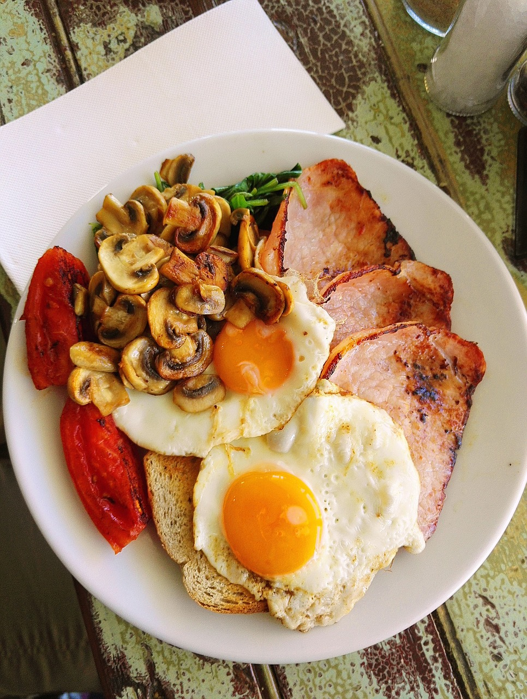

England
Where can you eat in England?
Breakfast
Regency Cafe
If you want to experience a traditional British breakfast, you should definitely go to Regency Cafe in Westminster, London. They have been serving a full English breakfast since 1946, and it still has its retro look with red-checkered curtains and formica tables. There you can get gg, bacon, sausage, and beans or tomato, but diners can add on black pudding, hash browns or bubble and squeak for a little extra. You can also pic between tea or coffee.
Regency Cafe is open from 07:00 - 14:30 from mondays to fridays, open from 07:00 - 12:00 on saturdays and closed on sundays. Click on this link if you want to see what they have on their menu.
Afternoon tea
Bread Ahead

When you are traveling to England without having an afternoon tea, then you should do so right away. At Bread Ahead you can have utterly delicious pastry, sandwiches and tea. And to spice it up you could also include sparkling vine.
Tea is served from 12:00 – 16:00, Thursday to Sunday and is priced at £35 per person, you can view the current menu on this link.